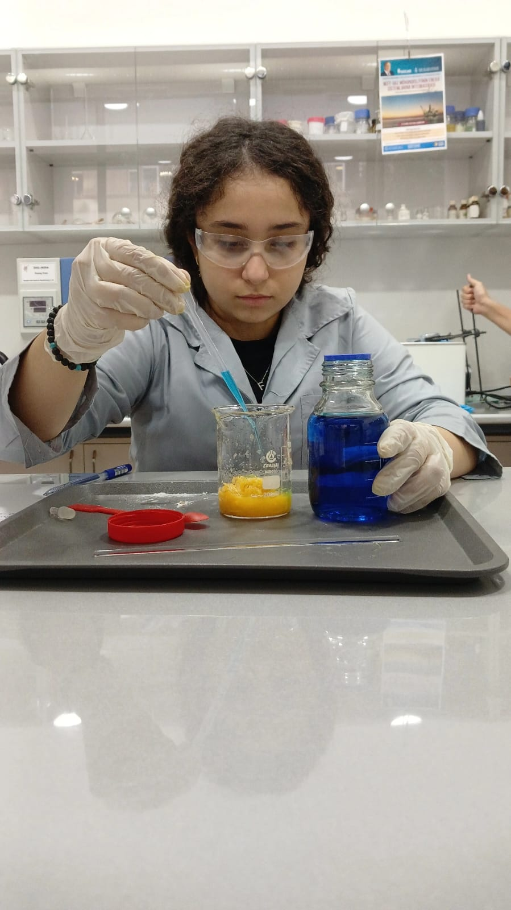
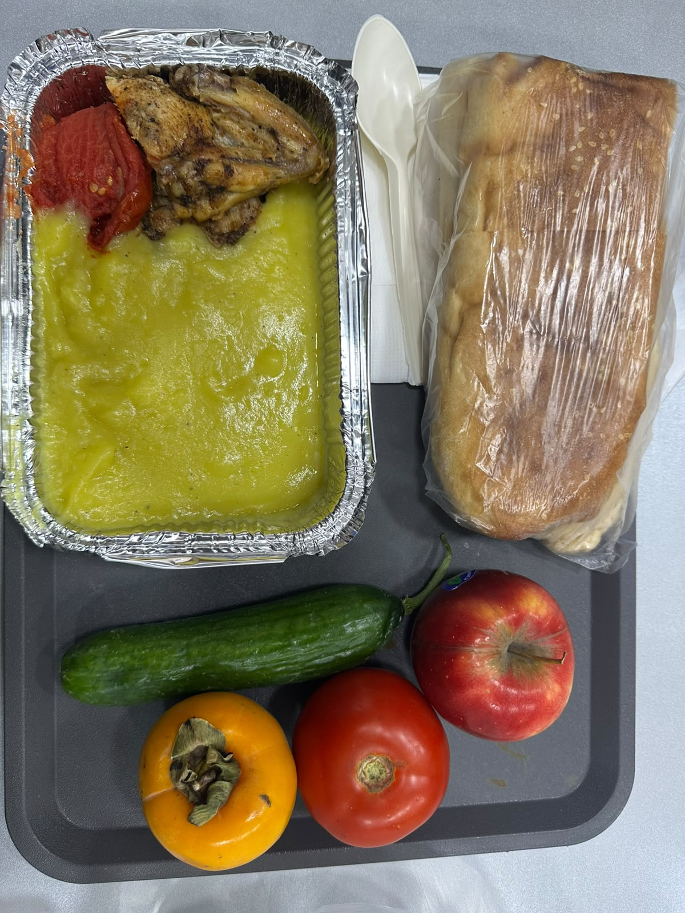
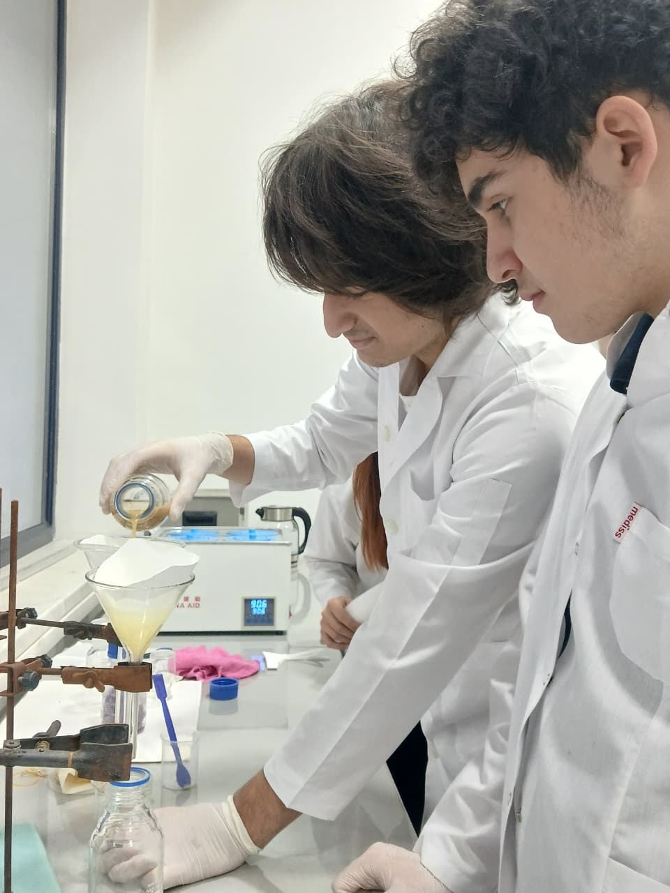
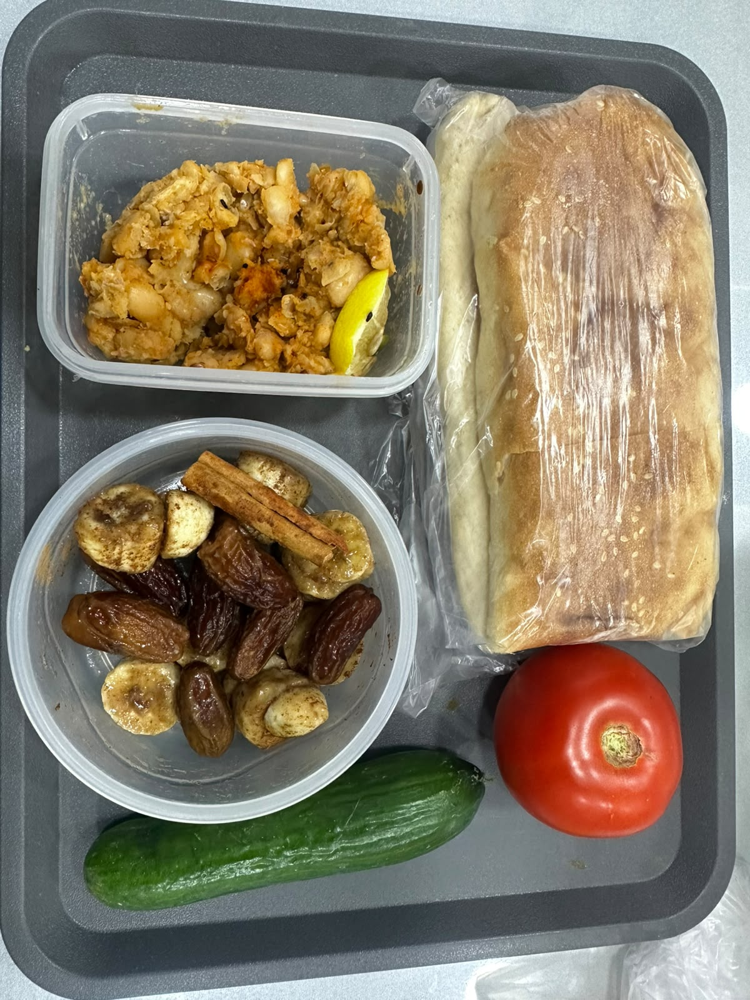
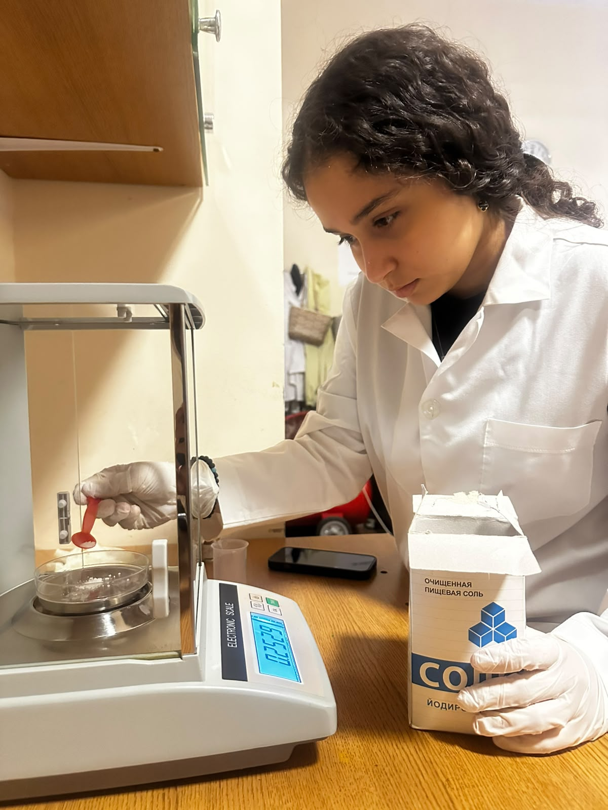

Student-led · Food science · School nutrition · Azerbaijani, Caspian & Mediterranean food
What changes when we eat them together?

Food is usually described one ingredient at a time — iron in lentils, vitamin C in peppers. Meals are not like that. NUTRIX LAB is a student-led initiative that studies food the way it is actually eaten: in combinations, in school lunchboxes, and in Azerbaijani, Caspian and Mediterranean recipes handed down through families.
We take everyday foods into the laboratory to explore what changes when they meet. We design practical lunchboxes from food that is really in the shops — and actually gets eaten. And we collect the food knowledge that older generations carry, so the lab, the lunchbox and the family kitchen can learn from each other.
This site publishes a laboratory measurement only after it has been made and checked. None are published here yet. Where a page shows no result, that means nothing has been published here — it is not a statement about work the team may already have under way.
Four strands, one initiative
Food science, school nutrition, hands-on experiments and cultural knowledge — each strand has its own page, and each one feeds the others.
-

01 · School nutrition School LunchBox Program The lunchboxes we developed and introduced through school activities, recorded ingredient by ingredient. Open the lunchboxes -

02 · Experimentation Inside Our Lab Weighing, mixing, filtering and testing everyday foods with our own hands. Step inside - 03 · Cultural knowledge Intergenerational Food Archive Traditional dishes and family food knowledge, linked to what goes in a school lunchbox today. Search the archive
-

04 · Food science Interactive Food Library Pick foods like yogurt, tomato or hummus and see how they combine, and what questions they raise. Try the explorer
What has happened so far, and what we are careful not to count yet: Our impact.
Explore a pairing
Every pairing has its own page: one question, the ingredients and how they are prepared, what published research already shows, and what this project plans to measure. Those three things are kept visibly separate.
- Mərci + bolqar bibəri Lentils + red bell pepper Does bell pepper change how much iron is released from lentils during digestion? Open
-
Yumurta + pomidor Egg + tomato How acidic does the mixture become, and does that depend on whether the tomato is cooked? Page in preparation
-
Mal əti + göyərti Beef + leafy greens Two different forms of iron in one dish. Does measuring them together differ from measuring each alone? Page in preparation
-
Düyü + lobya Rice + beans How fast does rice starch break down in the digestion model when beans are in the same meal? Page in preparation
The full plan covers roughly 25–30 common foods and 100–150 standardised combinations. Pairings are added to this index as their pages are written. Several of these questions come straight out of our own lunchboxes — the food library shows which.
The question behind the measurements
What we investigate, and what a laboratory can honestly tell us
Two foods put together are a new chemical environment. Acid from one can change what dissolves out of the other. Fibre and plant compounds can hold minerals so tightly they stay bound. Heat applied to one component can destroy a vitamin that mattered to the pair.
NUTRIX LAB works through a fixed set of measurements, applied the same way to every combination so the results can be compared with each other and repeated by someone else. Where it is relevant, the same pairing is measured raw, boiled and baked, because preparation is part of the combination rather than a detail around it.
Each measurement below has a matching limit. Those limits are not small print — they decide what the project is allowed to claim.

- Acidity (pH)
-
Whether combining two foods changes how acidic the mixture is. Acidity affects which minerals dissolve and whether some vitamins survive.
Limit. A pH reading describes the food in the beaker. It says nothing about the person eating it.
- Simulated digestion
-
A standardised laboratory model that exposes food to the enzymes, acidity and timing of the mouth, stomach and small intestine, so that every combination meets the same conditions.
Limit. The model is a deliberate, controlled approximation. It is not a human digestive system.
- Iron bioaccessibility
-
How much of the iron in a combination is released into solution during simulated digestion — the fraction that would, in principle, be available to be taken up.
Limit. Released is not absorbed. An accessible fraction in a flask is not an absorbed dose in a body.
- Starch breakdown rate
-
How quickly starch is broken into sugars in the model, compared between combinations and between preparation methods.
Limit. Used only as a laboratory proxy. It is not a blood-sugar measurement and will not be described as one.
- Antioxidant activity
-
A standard assay used to compare selected fruit and vegetable combinations against each other under identical conditions.
Limit. An assay compares samples in a tube. It does not establish an effect in a person.
- Cost and availability
-
Recorded alongside the chemistry: price in manat, with the shop and the date of pricing, plus whether the ingredient is in season and locally produced.
Limit. Prices move. Every figure published here will carry the date it was collected.
A score, only once it can be explained
The project plans a Food Interaction Score that combines measured results with cost, availability and sustainability. Nothing is shown on this site until the formula, the weightings and the inputs behind it are published alongside it. A number nobody can take apart is not a result.
Method, people and status
The project is designed to be reproduced. The protocol, the anonymised dataset, the scoring method and the code are all intended for publication, so another school can run the same experiments on their own local foods and add comparable results.
Planned outputs
- Laboratory study across 100–150 standardised food combinations
- An original food-interaction dataset
- An interactive food-interaction map
- The Food Interaction Score, published with its formula
- LunchBox AI
- The Azerbaijan School Lunch Atlas
- A school pilot measuring plate waste, cost and acceptance
- A food-waste estimator from standardised lunch photographs
- A research paper with methods, results, limitations and statistics
- Open protocol, code and anonymised data
Listed as planned. Individual progress is confirmed by the project team and will be marked here output by output as it is. What has already happened is recorded on Our impact.
What this project will not claim
Laboratory measurements on food are not measurements on people. No result published here will be presented as a health, medical or physiological effect in humans on the strength of in-vitro work alone.
Any research involving human participants — including the school pilot — requires ethical oversight, informed consent and an appropriate research partner before it begins.
Contributors
NUTRIX LAB is student-led. The team: Jeyla Ahmadzada, Youssef El Haroun, Mikayil Ahmadbayli, Farah Haji and Jamal Naghizade.
The project has an independent letter of support from a physician.
We do not list contributors, supervisors or partner organisations who have not confirmed their involvement.
Reproduce this
Once the protocol is published, another school can run these combinations on the foods in their own shops and contribute comparable results. That is the long-term point: not one lab's dataset, but a shared one.